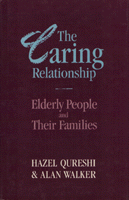

<body bgcolor="#FFFFFF" text="#000000" link="#0000FF" vlink="#CC0000" alink="#CC0000"><center><hr width="350" size="1" align="center" noshade>Interviews with 300 elderly people, along with family members who provide assistance<hr width="350" size="1" align="center" noshade><p><a href="https://cdcshoppingcart.uchicago.edu/Cart/ChicagoBook.aspx?ISBN=9780877226635&&PRESS=temple" target="_top">Buy this book!</a> | <a href="https://cdcshoppingcart.uchicago.edu/Cart/Cart.aspx?PRESS=temple" target="_top">View Cart</a> | <a href="https://cdcshoppingcart.uchicago.edu/Cart/Cart.aspx?PRESS=temple" target="_top">Check Out</a></p><p></p></center><!--none//--><h1>The Caring Relationship</h1>
<H2>Elderly People and Their Families</H2>
<h3>Hazel Qureshi and Alan Walker</h3>
<P>cloth 0-87722-663-6 $44.50, Jan 90, <FONT COLOR=#990033>Out of Print</FONT>
<BR> 287 pp
</P><p>At the heart of current debates about the development of modern society and the future of the welfare state is the issue of providing for the growing number of elderly people in every population. Contending that dependency is a social construction, Qureshi and Walker interviewed some 300 elderly people, along with family members who regularly provide some form of assistance, to determine the nature and extent of the "caring relationship" and its ramifications on the formation of public policy. The study, conducted in Sheffield, England, argues that British public policy regarding the aged is misdirected because it misconstrues their needs and regards calls for assistance as a sign that families are shirking their responsibilities of caring for elderly relatives.
<p>The authors evaluate different kinds of physical care needed to aid older citizens and examine the social foundations of the caring relationship. Despite the governments prediction that society will soon be overtaxed by the special needs of a dependent elderly population, they found that more people aged seventy-five and older choose independent living situations because of a continued preference for autonomy, that disability and dysfunction are not inevitable burdens of aging people, and that families-especially the women members-continue to provide a great deal of care for their elderly relatives. Still, they observed that for various reasons there exists a "care gap" between the needs of some elderly people and the provision of informal care.
<p>Qureshi and Walker conclude that public assistance is not a replacement of family or social network responsibilities and that the level and form of need varies greatly within the elderly population. They recommend that the policy goal should be a more varied menu rather than larger portions of current offerings.
<BR>&nbsp;<H2>About the Author(s)</H2>
<P><b>Hazel Qureshi</b> is Research Fellow in the Hester Adrian Research Center, University of Manchester.</P>
<P><b>Alan Walker</b> is Professor of Social Policy and Chair of the Department of Sociological Studies at the University of Sheffield.</P>
<BR><H2>Subject Categories</H2>
<p><A HREF="/tempress/sociology.html" TARGET="_top">Sociology</a>
<BR><A HREF="/tempress/health.html" TARGET="_top">Health and Health Policy</a>
</p>
<BR><h2 class="inpageheading">In the series</H2>
<P><I><a href="http://www.temple.edu/tempress/health_society.html" onMouseOver="window.status='Click for other books in this series!'; return true;" onMouseOut="window.status=''; return true;" target="_top">Health, Society, and Policy</a></i>, edited by Sheryl Ruzek and Irving Kenneth Zola.
</p><p>No longer active.<p><i>Health, Society and Policy</i>, edited by Sheryl Ruzek and Irving Kenneth Zola, takes a critical stance with regard to health policy and medical practice, ranging broadly in subject matter. Backlist titles include books on the legal and professional status of midwifery, the experience and regulation of kidney transplants, the evolution of federal law on architectural access, and a political/ethical argument for making the community responsible for universal access to health care.</p>
<p align="center"><a href="https://cdcshoppingcart.uchicago.edu/Cart/ChicagoBook.aspx?ISBN=9780877226635&&PRESS=temple" target="_top">Buy this book!</a> | <a href="https://cdcshoppingcart.uchicago.edu/Cart/Cart.aspx?PRESS=temple" target="_top">View Cart</a> | <a href="https://cdcshoppingcart.uchicago.edu/Cart/Cart.aspx?PRESS=temple" target="_top">Check Out</a></p><p><font face="Arial" size="1"><a href="copyright.html" onMouseOver="window.status='Web Copyright Policy';return true;" onMouseOut="window.status=''" title="Web Copyright Policy">&copy;</a> 2015 <a href="http://www.temple.edu" target="new" onMouseOver="window.status='Link to Temple University home page';return true;" onMouseOut="window.status=''" title="Link to Temple University home page">Temple University</a>. All Rights Reserved. http://www.temple.edu/tempress/titles/711_reg.html</font></p>